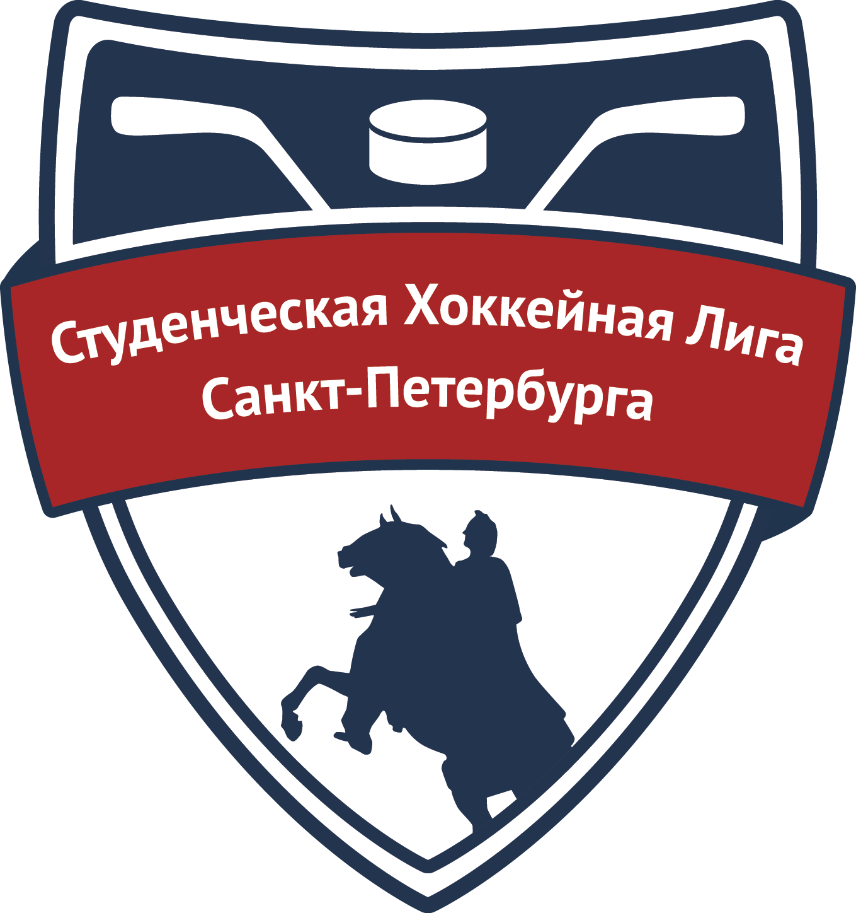

Студенческая хоккейная лига Санкт-Петербурга

Санкт-Петербург по праву является одним из центров развития студенческого хоккея в России,
где сосредоточены одни из лучших университетов страны.
Студенческая хоккейная лига Санкт-Петербурга (СХЛ СПб) объединяет под своим началом хоккейные
сборные университетов Северной столицы. СХЛ СПб была создана с целью продления соревновательного
и учебно-тренировочного процесса для спортсменов, не попавших в профессиональный спорт, а также
для хоккеистов-любителей в возрасте от 17 до 25 лет. В некоторых ВУЗах существует система
преемственности: если абитуриент занимался хоккеем в СДЮСШОР и планирует выступать за команду ВУЗа,
то ему предоставляются льготы при поступлении. Такая система разработана в ИТМО, СПбГАСУ, СПбПУ,
ЛТУ и РАНХиГС при Президенте РФ.
Главные задачи СХЛ – содействовать подъему уровня спортивного мастерства студенческого хоккея в
Санкт-Петербурге, создание условий для организации новых хоккейных команд на базе ВУЗов города,
а также выявление игроков, которые потенциально могут попасть в профессиональный хоккей.
С 2012 года развитием лиги занимается Федерация хоккея Санкт-Петербурга, отдел по проведению
студенческих соревнований. В течение сезона проводится два главных соревнования - Чемпионат и
Первенство Санкт-Петербурга.
Одним из направлений нашей работы может стать задача по сохранению в российском хоккее
молодых игроков на примере заокеанской Студенческой хоккейной лиги. Эти молодые ребята не
просто любят играть в хоккей, но и умеют это делать. А значит это, как правило, люди
с характером, с хорошим потенциалом. Им просто нужно систематические занятия спортом,
почувствовать вкус победы над собой. Тогда и в учебе, как и в хоккее будет получаться лучше,
чем сегодня!»
Владимир Путин
Президент Российской Федерации
Назад в меню